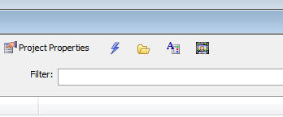

Video Finder
A large number of instructional videos have been recorded for Alpha Five. Finding the video that addresses the issue you need help on can be difficult. Therefore, we have included a new utility to help you find the correct video.Watch Video
There are two ways in which you can open the video finder: From the Help menu, or by clicking the Video Finder button on the Web Control Panel.
